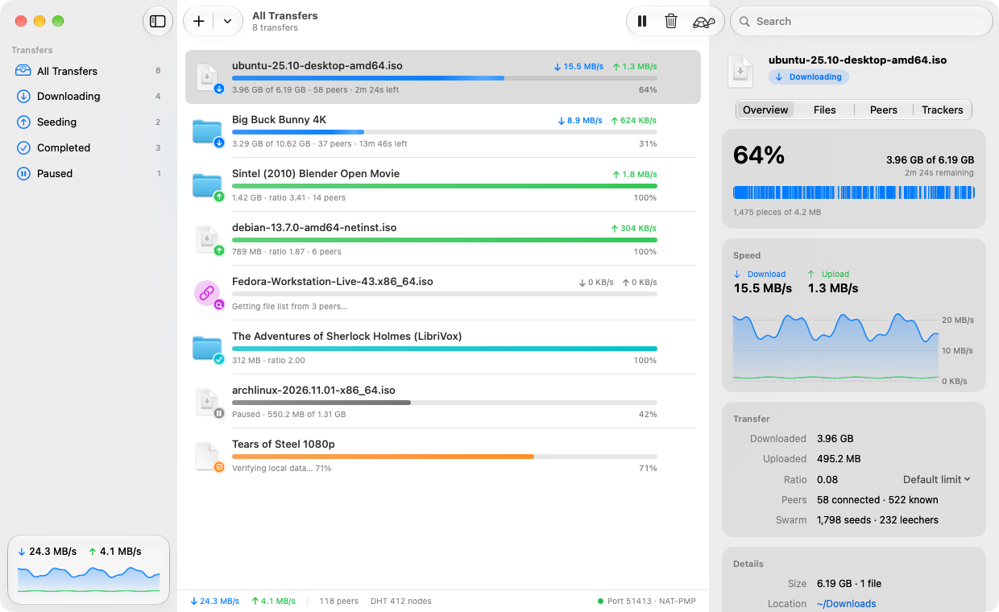
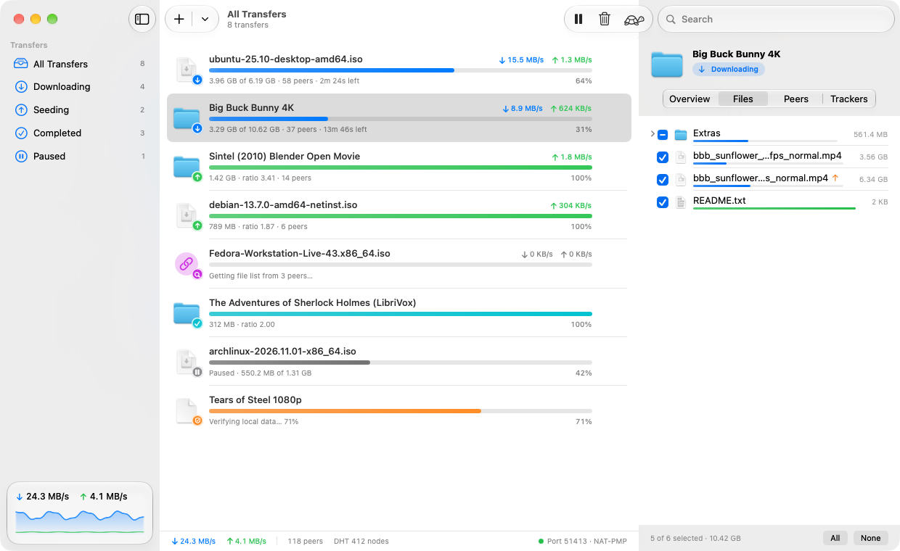
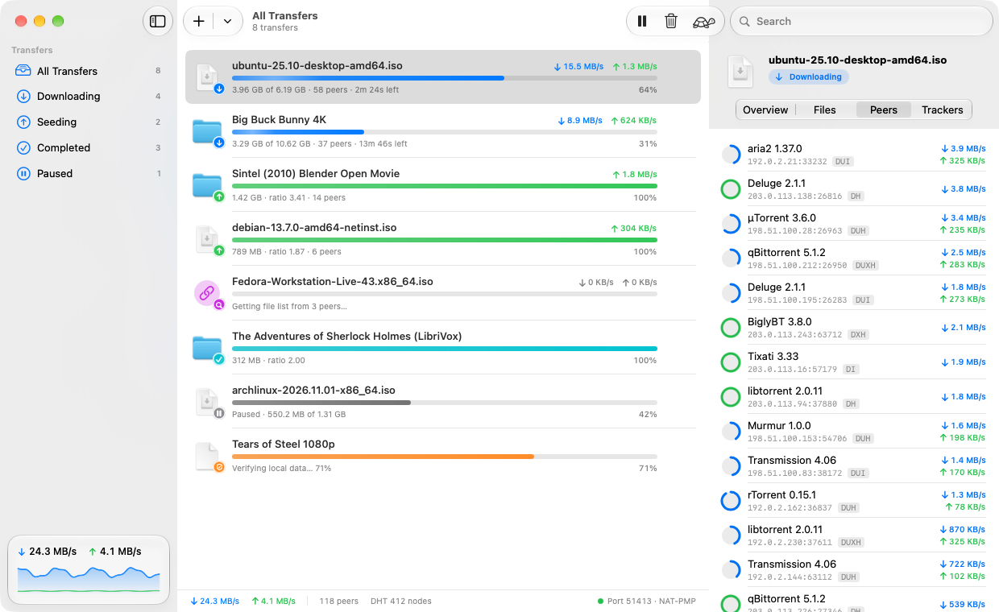
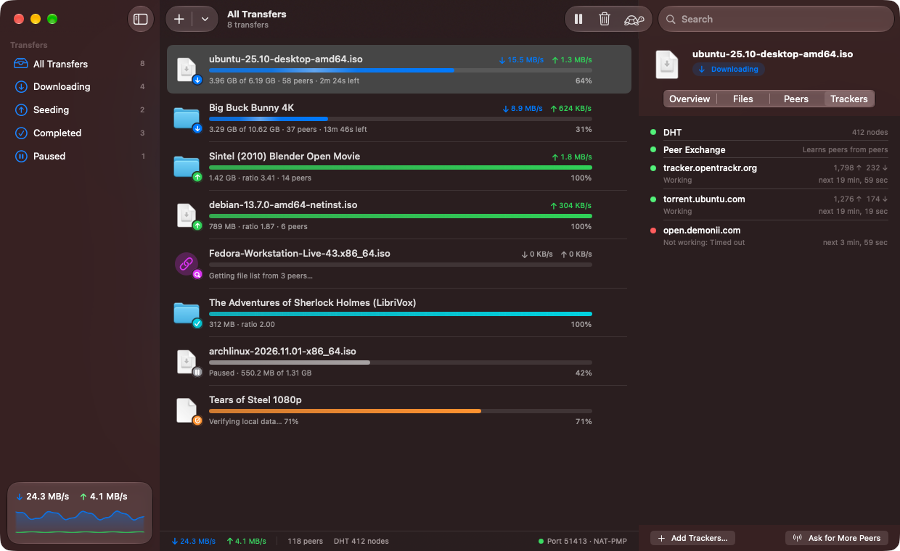

Torrents that feel at home on your Mac.Free and open source.
Murmur is a native BitTorrent client written from scratch in Swift. Click a magnet link, choose the files you want, and watch the swarm do the rest.
macOS 26 or later · Apple silicon and Intel · Signed and notarized

Everything a torrent client should do
And nothing it shouldn't: no ads, no bundled offers, no account, no analytics. Just a fast engine and an app that follows the Mac's conventions.
Magnet links
Click one in your browser, paste one, or let Murmur spot it on the clipboard. It fetches the file list from peers and starts right away.
Pick your files
Choose exactly what to download before you start or at any time, set priorities, and download in order to preview video while it arrives.
Finds peers anywhere
HTTP and UDP trackers, the DHT for trackerless torrents, and peer exchange. Port mapping with NAT-PMP or UPnP lets others reach you.
Live detail
Speed graphs, a piece map, every connected peer with its client and progress, and the status of each tracker in the inspector.
Speed limits and Slow Mode
Cap download and upload speed, or tap the tortoise to switch to your alternative limits when you need the bandwidth back.
VPN binding
Bind Murmur to your VPN's interface and it stops transferring the moment the VPN drops, then picks up again when it returns.
Truly native
SwiftUI with Liquid Glass, a menu bar extra, Dock progress, notifications, Shortcuts actions, Quick Look-friendly files and full keyboard control.
Queue and seeding
Limit how many download at once, stop seeding at a ratio (globally or per transfer), and pick up exactly where you left off after a restart.
Create torrents
Share a file or folder: Murmur hashes it, writes the .torrent with your trackers, and starts seeding it straight away.
Look inside any transfer
The inspector keeps everything one click away, without a maze of tabs and columns.



A BitTorrent engine written in Swift
Murmur doesn't wrap libtorrent or Transmission. Its engine, MurmurKit, is a from-scratch implementation built on Network.framework and CryptoKit, with no third-party dependencies.
It's tested against real swarms and other clients: it downloads Linux ISOs at full line speed, fetches trackerless magnet links through the DHT alone, and trades data both ways with aria2. Every piece is checked against its SHA-1 hash before it's written.
The engine is a standalone Swift package with a command-line client, so you can use it in your own projects too.
| BEP 3 | Peer wire protocol, rarest-first piece picking, endgame, tit-for-tat choking |
| BEP 5 | DHT: finds peers without trackers and serves other nodes |
| BEP 9 · 10 | Magnet links and metadata exchange over the extension protocol |
| BEP 11 | Peer exchange (PEX) |
| BEP 12 · 15 | Multiple trackers, HTTP(S) and UDP |
| BEP 23 · 7 | Compact peer lists, IPv4 and IPv6 |
| BEP 47 | Padding files in hybrid torrents |
| RFC 6886 | NAT-PMP, with UPnP IGD as a fallback |
Get started in a minute
Download
Open Murmur.dmg and drag Murmur into Applications. It's notarized by Apple, so it opens without warnings.
Make it the default
On first launch, click Make Default so magnet links and .torrent files open in Murmur.
Click a magnet link
Or drop a .torrent file on the window. Downloads go to your Downloads folder unless you choose another.
Questions
Is it free?
Yes. It's open source under the MIT License, with no ads, trial, account or in-app purchases.
What should I use it for?
BitTorrent is a great way to get large files that people share legally: Linux distributions, open movies, public domain books and audio, game updates and datasets. Please respect copyright where you live. Murmur doesn't include any search or content.
Does Murmur collect any data?
No. There's no analytics or telemetry. It talks only to the trackers, DHT nodes and peers of your torrents, and to your router to open its port.
Why does macOS ask about my local network?
Murmur asks your router to forward its listening port (with NAT-PMP or UPnP) so other peers can connect to you, which makes downloads faster. You can turn this off in Settings → Network.
How do I keep it on my VPN?
Connect your VPN, then pick its interface (usually starting with utun) in Settings → Network → Network interface. Murmur only transfers over that interface and pauses networking whenever it disappears.
Does it support encryption, µTP or BitTorrent v2?
Not yet. Murmur connects over plain TCP, which nearly every client accepts. Hybrid v1/v2 torrents work; v2-only torrents are on the roadmap, along with protocol encryption and µTP. Contributions are welcome.
Which Macs does it support?
macOS 26 or later, on Apple silicon and Intel. It's signed with a Developer ID and notarized by Apple.